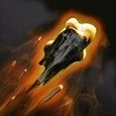
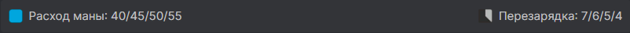
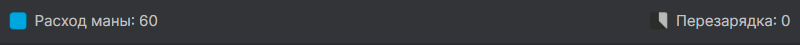
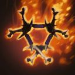
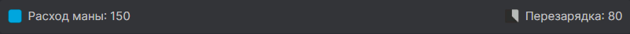
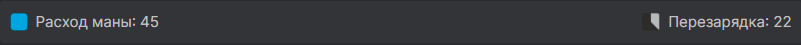
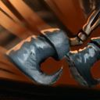

Clinkz
.jpg)
Здібності героя
Strafe
Збільшує швидкість та дальність атаки власника. Всі скелети-лучники в радіусі 1200 теж отримують додаткову дальність атаки і 50% додаткової швидкості атаки. Чи не знімає невидимість від Skeleton Walk.

Tar Bomb 
Герой кидає у вказаного ворога снаряд зі смолою. При попаданні снаряд завдає магічної шкоди і на 5 сек. розливає по землі смоляну калюжу. Супротивники, що настали в неї, сповільнюються і отримують більше фізичної шкоди від атак власника здібності і скелетів-лучників. Скелети-лучники автоматично починають атакувати ворога, яким потрапив снаряд цієї здібності.
Death Pact
Герой поглинає обраного ворожого крипа або союзного скелета, виліковуючись і отримуючи бонус до максимального здоров'я, і створює на його місці скелета-лучника. Чи не знімає невидимість від Skeleton Walk. Скелети-лучники нерухомі і вмирають від кількох геройських атак. Вони наносять частину шкоди власника і мають повну дальність атаки. Одночасно може існувати лише один скелет від цієї здібності. Скелети завдають спорудам на 25% менше шкоди.
Burning Army 
Герой закликає армію вогняних скелетів-лучників. Вони нерухомі та помирають від двох атак героїв. Скелети використовують здатність Searing Arrows поточного рівня, атакують лише героїв, наносять частину шкоди власнику і мають повну дальність атаки.
Burning Barrage
Переривається - герой випускає залп стріл у вибраному напрямку. Вони пролітають крізь усіх ворогів на шляху, завдаючи їм частку від звичайної шкоди, а також накладаючи ефекти атаки та уповільнення від здатності Tar Bomb.
Skeleton Walk 
Герой стає невидимим і пересувається крізь інших істот, доки атакує чи застосує предмет. При виході з невидимості створюються скелети-лучники.